Karten
35 Schlachtfelder, jedes in vier Größen (Klein, Normal, Groß, Riesig) – mit Lagebild, den
Schlüsselstellen und einem Geheimtipp, der die Schlacht drehen kann. Dazu kommen eigene Karten aus dem Karteneditor, auch
als .s3karte-Datei von Freunden.
Inhalt – alle Karten
Gelände in Zahlen
Was auf jeder Karte gilt – die Grundlage aller Tipps auf dieser Seite.
| Höhe | Je Meter Überhöhung 1,2 % mehr Reichweite (höchstens +25 %); bergauf schießen kostet bis zu 15 %. Im Nahkampf von oben bis zu +6 Angriff, als Verteidiger auf der Anhöhe bis zu +8 Abwehr. |
| Sturmangriff | Steht der Gegner gut 1,5 m höher, verpufft jeder Sturmangriff – Reiterei bergauf ist verschenkt. |
| Sichtlinie | Hügel, Felsen und Mauern halten gerade Geschosse auf. Bögen, Katapulte und Mörser schießen im hohen Bogen darüber hinweg, Gewehre und Kanonen brauchen freie Sicht. |
| Wald | Bäume fangen fast jeden zweiten Pfeil ab, Treffer richten nur 70 % Schaden an. Reiter und Fahrzeuge kommen auf 55 % Tempo. Fußvolk und leichte Reiter sind darin verborgen, bis sie angreifen oder der Feind auf 15 m heran ist. |
| Seichtes Wasser | Furten und Morast: halbes Tempo für Fußvolk und Reiter, 35 % für Fahrzeuge. Seichtes Wasser erscheint hell und durchscheinend; dunkles, tiefes Wasser und Felswände sind unpassierbar. |
| Gebäude | Besatzungen nehmen durch Beschuss nur 45 % Schaden. Nur Fußvolk kann Gebäude besetzen. Auf Wachtürmen steht man fast 10 m hoch. |
| Flanke und Rücken | Von der Seite verteidigt jeder nur mit 70 %, im Rücken mit 40 % – und Treffer im Rücken kosten zusätzlich Moral. Ein Karree hat weder Flanke noch Rücken. |
| Ausdauer | Laufschritt erschöpft fünfmal schneller als Marschtempo. Erschöpfte Truppen verlieren bis zu 25 % Kampfkraft und 30 % Tempo. |
Die Schlachtfelder
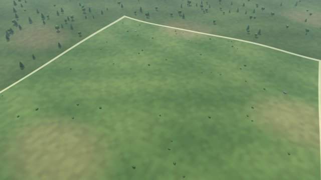
Grasebene Karte 1 · 320 × 320 m (Normal)
Die kleinste und ehrlichste Karte: kein Wald, kein nennenswerter Hügel, nichts, wohinter man sich verstecken könnte. Die Aufstellungszonen enden 28 m vor der Mitte – im Extremfall stehen sich die Heere nur gut 50 m gegenüber.
- Keine Deckung: Sonst fangen Bäume fast jeden zweiten Pfeil ab – hier trifft jeder Schuss frei.
- Kurze Wege: Reiterei erreicht in Sekunden jeden Punkt des Feldes.
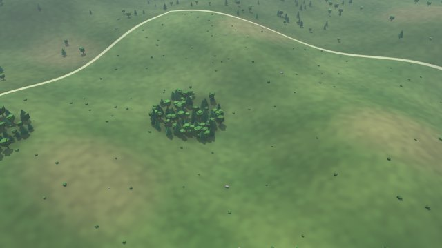
Hügelland Karte 2 · 360 × 360 m (Normal)
Sanft gewelltes Land mit drei Wäldchen. Die Kuppen sind nicht hoch, aber jeder Meter zählt: Überhöhung bringt 1,2 % Reichweite je Meter und im Nahkampf Angriff und Abwehr von oben.
- Kuppen: Bergauf gibt es keinen Sturmangriff, sobald der Gegner gut 1,5 m höher steht – Reiterei nur bergab oder auf gleicher Höhe ansetzen.
- Wäldchen: Fußvolk und leichte Reiter sind darin verborgen, bis sie selbst angreifen oder der Feind auf 15 m heran ist.

Waldtal Karte 3 · 360 × 360 m (Normal)
Ein Tal voller Wälder – die Karte der Hinterhalte. Wälder bremsen Reiter und Fahrzeuge auf gut die Hälfte, fangen fast jeden zweiten Pfeil ab und verbergen Fußvolk und leichte Reiter.
- Waldränder: Wer am Rand steht, schießt frei hinaus und steckt trotzdem nur 70 % des Schadens ein.
- Lichtungen: die einzigen Stellen, an denen Reiterei ihre Wucht entfalten kann.
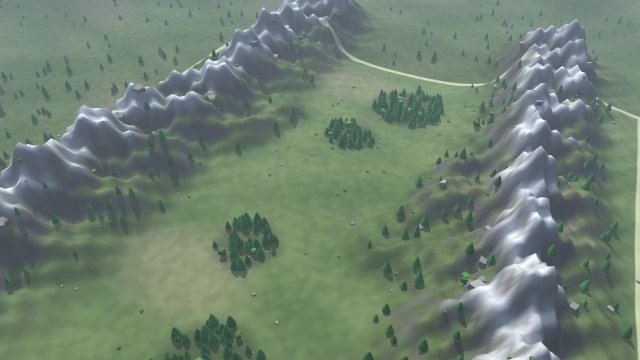
Gebirgspass Karte 4 · 440 × 440 m (Normal)
Zwei unbezwingbare Bergketten rahmen ein Tal von 150 bis 210 m Breite. In der Mitte ragen zwei Felssporne hinein: links auf Höhe der Feldmitte, rechts in Blaus Hälfte. Die Streifen hinter den Bergketten am Kartenrand sind vom Tal abgeschnitten.
- Linker Felssporn: Zwischen ihm und der Bergwand bleibt eine 15–20 m schmale Gasse.
- Rechter Felssporn (Blaus Hälfte): dahinter eine gut 35 m breite Gasse am Hang.
- Talboden: breit genug für eine geschlossene Schlachtlinie – Umgehen ist hier kaum möglich.
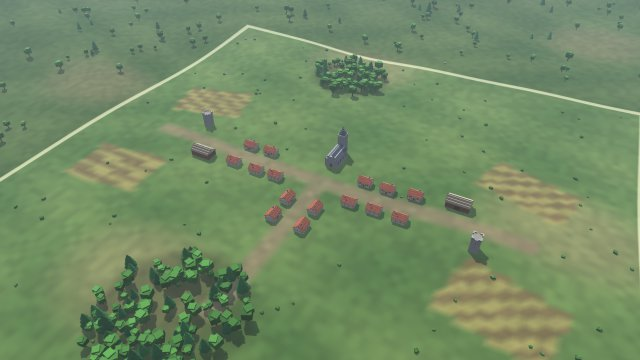
Dorf Karte 5 · 360 × 360 m (Normal)
Eine Dorfstraße quert das Feld von links nach rechts, gesäumt von gut zwanzig Häusern. Die Kirche steht 25 m nördlich der Straße – auf Blaus Seite. Dafür liegen an der Gasse nach Süden vier Häuser direkt vor Rots Aufstellung.
- Kirche (Mitte, 25 m nördlich der Straße): das größte Gebäude, Platz für 60 Mann.
- Südgasse: vier Häuser, 24 und 40 m vor der Mitte – Rots Brückenkopf.
- Wachtürme an den Flanken: der linke (100 m links) steht auf Rots Seite, der rechte auf Blaus. Die Besatzung steht fast 10 m hoch – gut 11 % mehr Reichweite.
- Scheunen 80 m links und rechts der Mitte, je 40 Mann Platz.

Burg Karte 6 · 400 × 400 m (Normal)
Blau verteidigt eine Burg im Norden: 70 × 60 m Mauerring mit vier Ecktürmen, dem Torhaus mittig in der Südmauer und einem Turm im Hof. Die Mauern sind hart – ohne Belagerungsgerät kommt man nur durchs Tor.
- Torhaus (Mitte der Südmauer, 60 m nördlich der Feldmitte): der einzige Eingang.
- Ecktürme: Schützen darin bestreichen zwei Mauerseiten zugleich.
- Kornfelder 110 m links und rechts vor der Burg: offenes Gelände ohne Schutz.
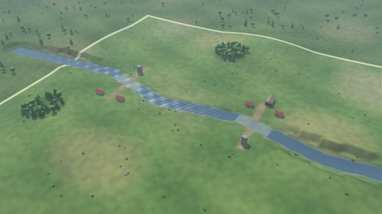
Flussübergang Karte 7 · 400 × 400 m (Normal)
Ein 30 m breiter, tiefer Fluss teilt das Feld. Hinüber kommt man nur an zwei Furten: 75 m links und 95 m rechts der Mitte, je rund 35 m breit. Zwischen den Furten liegen 170 m – zu weit, um beide mit einer Linie zu decken.
- Linke Furt: auf Rots Ufer ein Wachturm, drüben zwei Häuser und eine Scheune.
- Rechte Furt: auf Rots Ufer zwei Häuser, drüben ein Wachturm.
- In der Furt: halbes Tempo für Fußvolk und Reiter, Fahrzeuge schaffen 35 %.
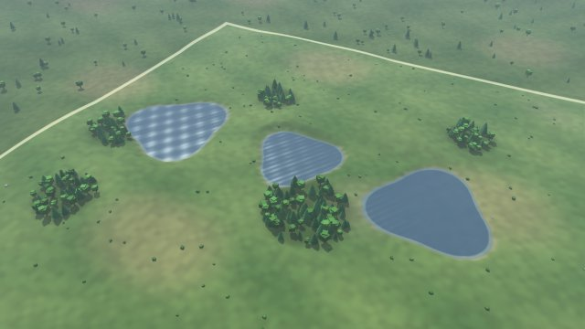
Seenplatte Karte 8 · 420 × 420 m (Normal)
Drei tiefe Seen liegen quer zwischen den Heeren. Hinüber führen vier Landwege: zwei Korridore an den Kartenrändern und zwei Landbrücken zwischen den Seen.
- Linker Randkorridor: der breiteste Weg, gut 60 m.
- Linke Landbrücke (zwischen linkem und mittlerem See): gut 40 m breit, 50 m links der Mitte.
- Rechte Landbrücke: gut 50 m breit, 50 m rechts der Mitte.
- Rechter Randkorridor: knapp 50 m.
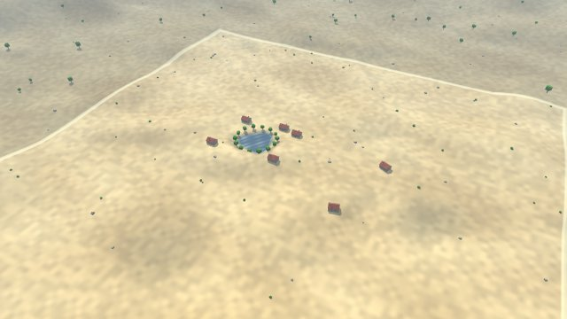
Wüste Karte 9 · 440 × 440 m (Normal)
Offene Dünenlandschaft mit einer kleinen Oase rechts der Mitte, leicht auf Blaus Seite. Sieben Lehmhäuser liegen verstreut, zwei davon mitten im Niemandsland.
- Oase (40 m rechts, 20 m nördlich der Mitte): kleiner Teich, drei Häuser dahinter auf Blaus Seite.
- Zwei Lehmhäuser knapp südlich der Mittellinie, 8 und 72 m rechts – außerhalb jeder Aufstellungszone.
- Dünen: viele kleine Kämme, jeder bringt ein paar Meter Höhe.
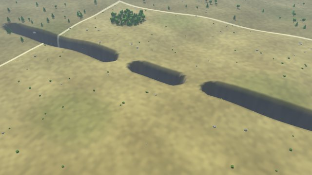
Schlucht Karte 10 · 400 × 400 m (Normal)
Eine 28 m tiefe Schlucht zieht sich quer über die ganze Karte. Hinüber führen nur zwei Felsbrücken, je gut 20 m breit, 55 m links und rechts der Mitte.
- Felsbrücken: jede gerade breit genug für ein, zwei Bataillone nebeneinander.
- Die Schlucht selbst ist schmal (rund 30 m): Schützen schießen bequem hinüber.
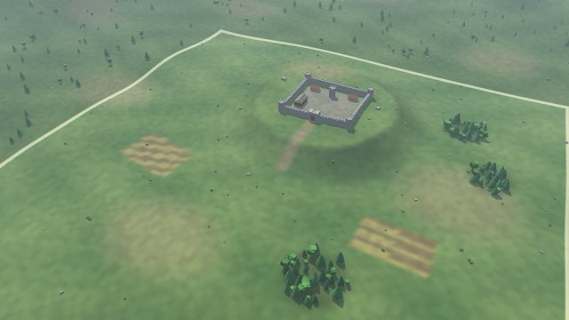
Hochlandfestung Karte 11 · 440 × 440 m (Normal)
Dieselbe Burg wie auf der Karte „Burg“ – aber auf einem Hochplateau, gut 10 m über dem Umland. Das Plateau reicht rund 40 m vor das Tor; davor liegt der Hang.
- Plateaurand (etwa 20 m nördlich der Feldmitte): hier beginnt der Aufstieg.
- Torhaus mittig in der Südmauer.
- Hinter der Burg bleibt auf dem Plateau Platz für einen Umgehungsmarsch.

Sumpfland Karte 12 · 380 × 380 m (Normal)
Fast die ganze Karte steht knöcheltief unter Wasser. Morast halbiert das Tempo von Fußvolk und Reiterei, Fahrzeuge schaffen nur ein gutes Drittel. Sieben Wälder bieten Deckung und Verstecke.
- Wälder: die einzigen Orte, an denen man nicht auf dem Präsentierteller steht.
- Kein tiefes Wasser: Man bleibt nirgends stecken – es dauert nur.
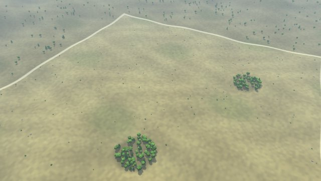
Große Steppe Karte 13 · 600 × 600 m (Normal)
Die größte Karte: 600 × 600 m trockenes, fast leeres Grasland mit zwei Wäldchen – gemacht für Massenschlachten mit Zehntausenden.
- Anmarsch über bis zu 580 m zwischen den hintersten Aufstellungen.
- Flanken: so viel Platz, dass sich jede Linie umgehen lässt.

Schneefeld Karte 14 · 400 × 400 m (Normal)
Eine verschneite Ebene mit sechs Tannenwäldern: offen genug für Reiterei, mit genug Wald für Überraschungen.
- Tannenwälder: dicht gestreut, ideal für verborgene Schützen und Speerträger.
- Freie Schneisen dazwischen: die natürlichen Angriffswege.
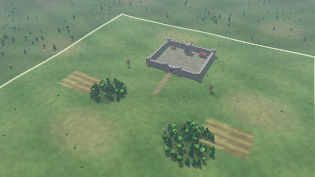
Königsfestung Karte 15 · 420 × 420 m (Normal)
Die stärkste Festung im Spiel: 90 × 80 m dicke Mauern, Rundtürme und ein Bergfried. Davor stehen zwei Holztürme als Vorposten, 72 m links und rechts der Mitte.
- Holztürme (je 72 m seitlich, 20 m vor der Festungsmauer): Vorposten mit Schussfeld auf die Anmarschwege.
- Festungsfront 50 m nördlich der Feldmitte.
- Bergfried: der letzte Halt, wenn die Mauern fallen.
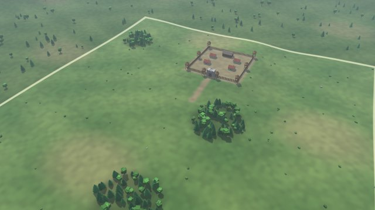
Holzkastell Karte 16 · 380 × 380 m (Normal)
Ein römisches Holzkastell auf einer flachen Anhöhe (gut 5 m): 70 × 70 m Palisade, Ecktürme, Seitentürme, zwei Tortürme und das Tor mittig in der Südseite. Davor eine Pfahlreihe, die Mitte bleibt frei.
- Pfähle 17 m vor dem Tor, 25 und 40 m links und rechts: Reiter, die hineinreiten, verletzen sich.
- Freie Gasse vor dem Tor, gut 30 m breit.
- Nordseite: nur die beiden Ecktürme – die schwächste Stelle.

Akropolis Karte 17 · 400 × 400 m (Normal)
Eine Tempelburg auf einem steilen Hügel, gut 12 m über dem Umland. Steinmauern umschließen 80 × 60 m; das Tor in der Südmauer flankieren zwei Türme.
- Tor (Südmauer) mit Tortürmen 20 m links und rechts davon.
- Hügelkante: knapp 30 m vor dem Tor beginnt der Hang.
- Seitenterrassen: Zwischen Mauer und Hangkante bleiben nur rund 18 m.

Grenzburg Karte 18 · 380 × 380 m (Normal)
Eine kleine Steinburg (60 × 50 m) mit Bergfried auf einem flachen Hügel. Davor zwei Holztürme und eine Pfahlreihe; links und rechts neben der Burg steht je ein Haus – außerhalb der Mauern.
- Holztürme 48 m links und rechts, gut 10 m vor der Burg.
- Pfähle 20 m vor der Mauer, die Mitte bleibt frei.
- Zwei Häuser 60 m seitlich der Burg, auf Höhe der Seitenmauern.
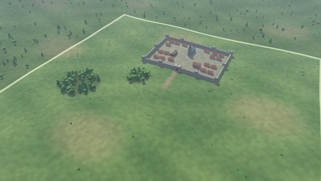
Ummauerte Stadt Karte 19 · 420 × 420 m (Normal)
Eine mittelalterliche Stadt: 130 × 90 m Mauerring, zehn Türme, ein Tor in der Südmauer, dahinter Kirche, Gasthof und dichte Häuserzeilen. Die längste Mauer im Spiel.
- Tor (Mitte der Südmauer) zwischen Türmen 32 m links und rechts.
- Seitenmauern: 90 m lang mit nur einem Turm in der Mitte.
- Häuser und Gasthof hinter dem Tor: Wer durchbricht, kämpft sich Gasse um Gasse vor.

Grabenlinie Karte 20 · 400 × 400 m (Normal)
Westfront im Kleinformat: ein Minengürtel, zwei Drahtverhaue und drei Grabenlinien hintereinander, dazwischen Bunker. Blau verteidigt, Rot muss hindurch.
- Minen 30 m nördlich der Mitte – in der Mitte sowie 45 und 90 m links und rechts, dazwischen frei.
- Erster Draht (44 m) mit einer einzigen Lücke: genau in der Mitte.
- Erster Graben (60 m): Lücken 55 m links, in der Mitte und 65 m rechts.
- Zweiter Draht (76 m): Lücken 40 m links und 20 m rechts; vier Bunker auf gleicher Höhe.
- Zweiter Graben (88 m): Lücken 25 m links und 35 m rechts. Dritter Graben (116 m): links, Mitte, rechts.

Außenposten Karte 21 · 400 × 400 m (Normal)
Ein moderner Stützpunkt: ein Grabenring (Radius 44 m) um ein Munitionslager, davor ein Drahtring und ein Minengürtel, dazu fünf Bunker und zwei Wachtürme. Blau verteidigt.
- Minen: nur im südlichen Halbkreis, Richtung Rot.
- Draht: rundum – außer im Norden.
- Grabenring: eine einzige Lücke, nach Norden.
- Bunker: drei nach Süden, zwei nach Norden; das Munitionslager in der Mitte.
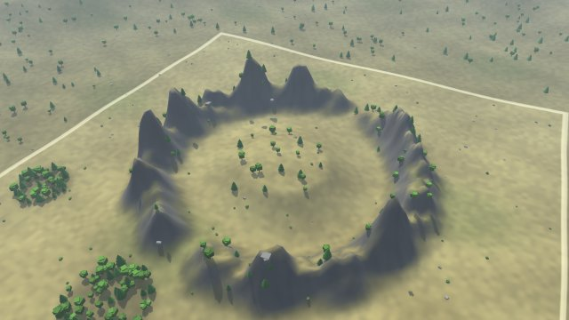
Kraterrand Karte 22 · 440 × 440 m (Normal)
Ein Ringwall wie ein erloschener Vulkan, 230 m im Durchmesser und 30 m hoch. Zwei Tore führen hinein – sie liegen sich nicht genau gegenüber. In der Mitte erhebt sich ein Plateau (Radius 38 m, gut 9 m hoch).
- Südtor (Rots Seite): leicht rechts der Mitte.
- Nordtor (Blaus Seite): leicht links der Mitte.
- Zentralplateau: Höhenvorteil für den, der es zuerst hält.
- Außenring: Zwischen Kraterwand und Kartenrand bleiben rundum rund 100 m.

Zwei Burgen Karte 23 · 460 × 460 m (Normal)
Zwei gleich starke Burgen (70 × 50 m) stehen sich gegenüber, die Tore zur Mitte, 230 m voneinander entfernt. Wer seine hält und die andere bricht, gewinnt.
- Eigene Burg: Rot im Süden, Blau im Norden.
- Feldmitte: 115 m vor beiden Toren – Niemandsland ohne Deckung.
- Straße von Tor zu Tor.
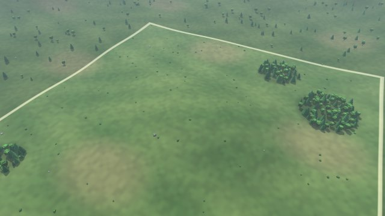
Stufenhügel Karte 24 · 400 × 400 m (Normal)
Ein Terrassenhügel beherrscht die Mitte: drei Stufen zu je 4–5 m, oben gut 13 m über dem Umland. Die unterste Stufe misst 190 m im Durchmesser, der Gipfel nur 64 m.
- Unterste Terrasse (Radius 95 m): breit genug für eine ganze Schlachtlinie.
- Mittlere Terrasse (Radius 62 m).
- Gipfel (Radius 32 m): Platz für ein, zwei Bataillone.

Die Brücke Karte 25 · 400 × 400 m (Normal)
Ein tiefer, fast 40 m breiter Fluss – und eine einzige, 45 m breite Furt genau in der Mitte. An beiden Ufern liegt je ein Weiler aus drei Häusern, dazu ein Wachturm.
- Furt (Mitte): halbes Tempo für Fußvolk und Reiter, Fahrzeuge 35 %.
- Rots Weiler: drei Häuser 35–50 m südlich der Furt, Wachturm 60 m rechts.
- Blaus Weiler: drei Häuser 35–50 m nördlich, Wachturm 60 m links.

Felslabyrinth Karte 26 · 420 × 420 m (Normal)
Steile, 30 m hohe Felswände bilden Gassen und Kessel. Eine lange Mittelwand sperrt das Zentrum – gekämpft wird links und rechts davon. Reiter und Geschütze tun sich schwer.
- Mittelwand: 180 m lang, quer durch die Mitte; vorbei geht es nur an ihren Enden.
- Rechts der Mittelwand: Eine Seitenwand bildet einen gut 30 m breiten Kessel – auf Rots Hälfte.
- Links der Mittelwand: der gleiche Kessel – auf Blaus Hälfte.
- Vordere Wände: Lücke in der Mitte (rund 55 m) und an den Kartenrändern.
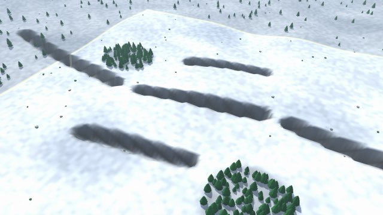
Gletscherspalten Karte 27 · 400 × 400 m (Normal)
Ein Eisfeld, quer zerrissen von einer tiefen Spalte. Hinüber führen zwei Schneebrücken: links (95 m von der Mitte, gut 20 m breit) und rechts (77 m, rund 15 m breit). In beiden Aufstellungsräumen liegt zusätzlich eine kurze Spalte.
- Linke Schneebrücke: die breitere.
- Rechte Schneebrücke: schmal – eine Linie muss hier zur Kolonne werden.
- Rots Spalte: 90 m südlich der Mitte, von 40 m links bis 70 m rechts.
- Blaus Spalte: 80 m nördlich, von 60 m links bis 40 m rechts.
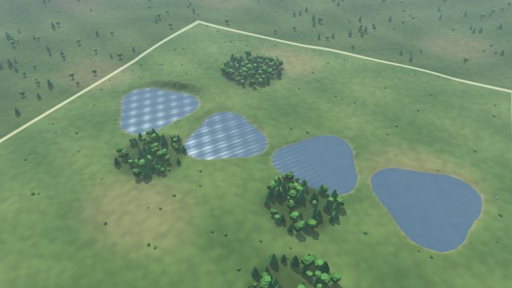
Inselkette Karte 28 · 420 × 420 m (Normal)
Vier Seen trennen die Heere. Zwischen ihnen liegen drei Landbrücken von nur 15–25 m Breite, dazu je ein Korridor an den Kartenrändern.
- Linker Randkorridor: gut 20 m.
- Landbrücken: 100 m links (15 m breit), 15 m links (15 m) und 72 m rechts (25 m).
- Rechter Randkorridor: fast 50 m – der mit Abstand breiteste Weg.
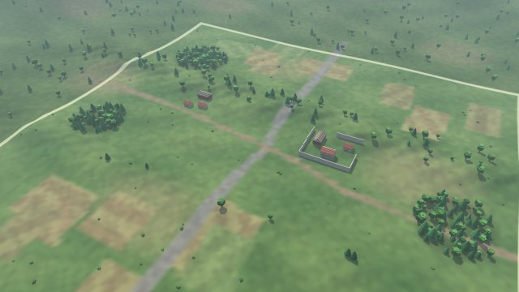
Höhenzug Karte 29 · 440 × 440 m (Normal)
Linienzeit: Ein langer Höhenzug (9 m) zieht sich 60–75 m nördlich der Mitte quer über das Feld, ein flacher Gegenhang liegt im Süden. Davor steht links ein ummauerter Gutshof (Gasthof, Scheune, Wohnhaus) an der gepflasterten Chaussee, die die Karte von Süd nach Nord kreuzt.
- Höhenzug im Norden: wer dahinter steht, ist für Kanonen auf der anderen Seite nicht zu sehen.
- Gutshof links vor dem Kamm: Mauern mit Toren, Gebäude zum Besetzen.
- Chaussee in der Mitte und Feldweg quer: 15 % schneller vorankommen.
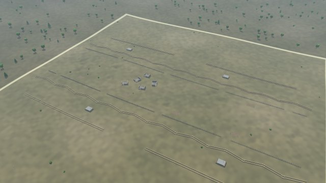
Niemandsland Karte 30 · 420 × 420 m (Normal)
Westfront: Zwei Grabensysteme im Zickzack liegen sich 116 m gegenüber, dahinter je eine zweite Linie und zwei Bunker. Dazwischen Trichterfeld, Schlamm und die Ruinen eines Dorfes. Vor jedem Graben liegt Stacheldraht mit vier Gassen und davor ein Minengürtel – sie treffen nur den Feind ihrer Seite.
- Draht vor den eigenen Gräben (16 m davor) mit vier Gassen für den Ausfall.
- Minenfelder 28 m vor dem Graben: unsichtbar, gefährlich für Fahrzeuge.
- Schlammlöcher im Niemandsland bremsen – Pferde und Panzer am stärksten.
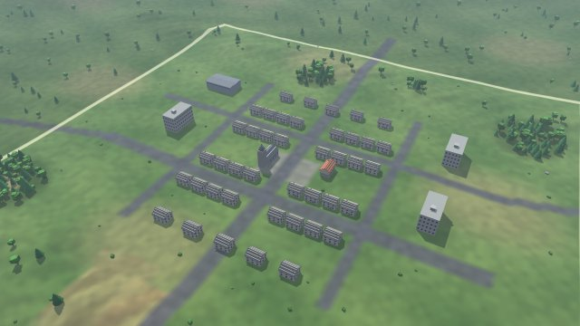
Kleinstadt Karte 31 · 400 × 400 m (Normal)
Eine Kleinstadt um eine asphaltierte Hauptstraße (Nord–Süd) mit zwei Querstraßen. Am Platz in der Mitte steht die Kirche, ringsum Reihenhäuser, am Rand drei Wohnblöcke, ein Gasthof und eine Lagerhalle.
- Reihenhäuser: 16 Mann, Wohnblöcke: 48 Mann – feste Stützpunkte.
- Hauptstraße und Querstraßen: schnelle Wege, aber offen.
- Zwei flache Hügel am Nord- und Südrand, kleine Wäldchen in den Ecken.
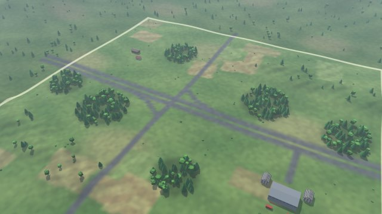
Autobahn Karte 32 · 480 × 480 m (Normal)
Eine Autobahn mit zwei Fahrbahnen teilt die Karte von West nach Ost, eine Landstraße kreuzt sie mit Auffahrten. Links unten liegt eine Raststätte mit Halle, rechts oben ein Gehöft, dazwischen Wälder und zwei Höhenrücken.
- Autobahn und Landstraße: der schnellste Weg über die Karte.
- Wälder beiderseits der Autobahn: Deckung, aber Fahrzeuge kommen nur langsam hindurch.
- Raststätte: Halle, Häuser und Container als Stützpunkt im Süden.
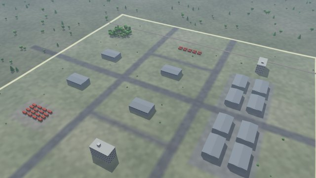
Industriegebiet Karte 33 · 400 × 400 m (Normal)
Ein Industriegebiet: zwei Reihen Lagerhallen links, einzelne Hallen in der Mitte und rechts, ein Containerlager, zwei Wohnblöcke und ein Gleis im Norden. Ein Straßenraster teilt alles in Blöcke.
- Lagerhallen: 40 Mann, viel Deckung.
- Containerlager rechts unten und oben: kaum zu durchschießen.
- Lange, offene Straßen: gute Schussbahnen.
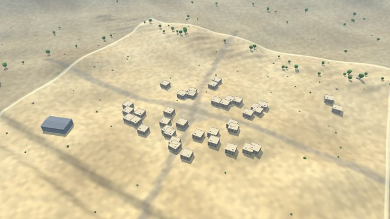
Wüstenstadt Karte 34 · 420 × 420 m (Normal)
Eine Stadt aus Flachdachhäusern um einen Marktplatz, durchzogen von zwei Sandpisten. Ein trockenes Flussbett läuft im Süden quer über die Karte, im Norden ein langer Dünenrücken. Es ist heiß: Alle ermüden schneller, schwer Gerüstete am meisten.
- Flachdachhäuser: 18 Mann, dicht an dicht in verwinkelten Gassen.
- Trockenes Flussbett im Süden: 4 m tiefer, Deckung vor Beschuss.
- Hitze: Ritter und Panzergrenadiere sind schnell erschöpft – leichte Truppen sind im Vorteil.
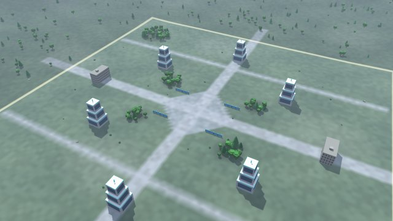
Zukunftsstadt Karte 35 · 420 × 420 m (Normal)
Eine Stadt der Zukunft: sechs Wohntürme, zwei Wohnblöcke an den Rändern und zwei breite Achsen, die sich an einem großen Platz kreuzen. Vor und hinter dem Platz stehen Energiebarrieren, die jedes Geschoss aufhalten.
- Wohntürme: 40 Mann, sehr fest.
- Energiebarrieren nördlich und südlich des Platzes: undurchdringlich für Geschosse, aber umgehbar.
- Kleine Parks: Deckung im Grünen.